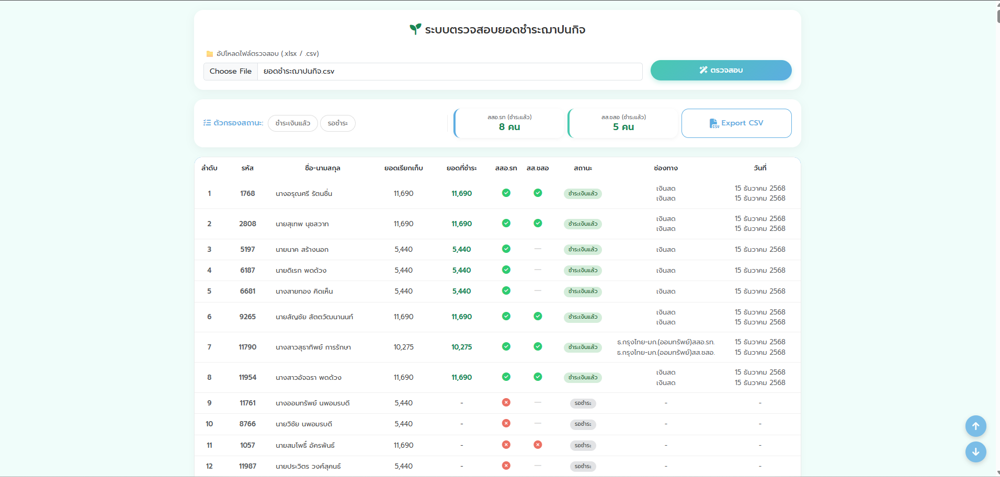

คู่มือการใช้งาน
ระบบตรวจสอบยอดชำระฌาปนกิจ
ระบบนี้ใช้สำหรับตรวจสอบสถานะการชำระเงินฌาปนกิจ โดยการอัปโหลดไฟล์ข้อมูล (.xlsx หรือ .csv) ระบบจะทำการประมวลผลและแสดงสถานะ แยกตามประเภทสมาชิก (สสอ.รท และ สส.ชสอ)
1
การนำเข้าข้อมูล (Upload)
เริ่มต้นการใช้งานโดยการนำไฟล์ข้อมูลเข้าสู่ระบบ:
- กดที่ปุ่ม Choose File (หรือ เลือกไฟล์)
- เลือกไฟล์ข้อมูลจากเครื่องคอมพิวเตอร์ของคุณ (รองรับไฟล์นามสกุล
.xlsxหรือ.csv) - เมื่อเลือกไฟล์แล้ว ชื่อไฟล์จะปรากฏในช่อง
- กดปุ่มสีฟ้า ตรวจสอบ เพื่อเริ่มประมวลผล

2
การดูภาพรวมและสรุปผล (Dashboard)
เมื่อระบบประมวลผลเสร็จสิ้น ด้านบนของตารางจะแสดงสรุปจำนวนผู้ที่ชำระเงินแล้ว:
- สสอ.รท (ชำระแล้ว): แสดงจำนวนคนที่เป็นสมาชิก สสอ.รท ที่ชำระเงินแล้ว (ตัวเลขสีเขียว)
- สส.ชสอ (ชำระแล้ว): แสดงจำนวนคนที่เป็นสมาชิก สส.ชสอ ที่ชำระเงินแล้ว (ตัวเลขสีเขียว)

3
การกรองข้อมูล (Filter)
ท่านสามารถกดปุ่มตัวกรองด้านซ้ายบน เพื่อเลือกดูข้อมูลเฉพาะกลุ่มที่ต้องการได้:
- ชำระเงินแล้ว : ดูรายชื่อผู้ที่ชำระเงินครบแล้ว (สีเขียว)
- รอชำระ : ดูรายชื่อผู้ที่ยังไม่ได้ชำระ หรือค้างชำระ (สีแดง)

4
ความหมายของข้อมูลในตาราง
ตารางจะแสดงรายละเอียดสมาชิกแต่ละคน โดยมีความหมายของสัญลักษณ์ดังนี้:
| คอลัมน์ | คำอธิบาย |
|---|---|
| ยอดเรียกเก็บ | จำนวนเงินที่ต้องชำระตามกำหนด |
| ยอดที่ชำระ | จำนวนเงินที่สมาชิมาชำระจริง (ตัวเลขสีเขียวคือชำระแล้ว) |
| สสอ.รท / สส.ชสอ |
✔ (สีเขียว) = ชำระส่วนนี้แล้ว ✖ (สีแดง) = ยังไม่ชำระ |
| สถานะ |
ชำระเงินแล้ว = ชำระครบถ้วน รอชำระ = ยังค้างชำระ |
5
การส่งออกข้อมูล (Export)
หากต้องการนำข้อมูลไปใช้งานต่อ สามารถกดปุ่ม Export CSV ที่มุมขวาบน ระบบจะดาวน์โหลดไฟล์รายงานสรุปผลออกมาเป็นไฟล์ CSV ทันที
ข้อควรระวัง: โปรดตรวจสอบรูปแบบไฟล์ข้อมูลต้นฉบับให้ถูกต้องก่อนการอัปโหลด เพื่อให้ระบบสามารถอ่านค่า รหัสสมาชิก และ ยอดเงิน ได้อย่างแม่นยำ